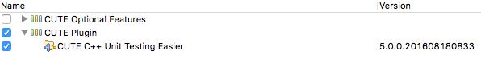

CUTE Installation and System Requirements¶
You can use the CUTE unit testing framework with the Eclipse IDE or as a standalone solution. If you use Eclipse for software development, the CUTE Eclipse plug-in has everything you need. If you use Microsoft Visual Studio, use the CUTE standalone version.
CUTE Eclipse Plug-in¶
The latest release of CUTE is version 5.0.0 for Eclipse Neon and CDT 9.0.0. If you are working with earlier versions of Eclipse and CDT have a look at the list of updatesites below.
The CUTE Eclipse plug-in depends on the following software:
- Java JRE
- Eclipse IDE (Recommended Eclipse Neon)
- width installed Eclipse C/C++ Development Tooling: Either
- download CDT combined with Eclipse ("Eclipse IDE for C/C++ Developers" from Eclipse Download Page) or
- install into any Eclipse from the CDT Updatesite.
- width installed Eclipse C/C++ Development Tooling: Either
- Boost C++ Libaries (pre C++11):
- Install Boost C++ Libaries on your system or
- use the Boost Headers provided with the Cute plug-in.
- Since C++11, Boost is no longer needed.
For CDT to be able to compile, you will also need to have an Eclipse compatible C++ compiler installed.
Install the CUTE Eclipse plug-in¶
The CUTE plug-in can either be installed from the Eclipse Marketplace or by using our updatesite directly.
Installing CUTE Using the Eclipse Marketplace¶
This is the easiest way to get CUTE. Choose Help > Eclipse Marketplace in the Eclipse menu and search for CUTE. This will install the CUTE plug-in and required CUTE header files. If you require to install optional CUTE features, please install them from the CUTE Updatesite.
Installing CUTE Using the CUTE Updatesite¶
- Choose Help > Install New Software in the Eclipse menu to start the Eclipse software installer.
- Click Add... to add the CUTE repository.
- Type (or copy) http://www.cute-test.com/updatesite into the "Work with:" text field and confirm with Enter.
- Choose at least the CUTE Plugin feature.
- Click Next. Eclipse will then resolve dependencies and show the install dialog.
- Read and accept the licences and click Finish if you want to continue installing CUTE and agree with the licences.

Eclipse will download and install everything you need to use CUTE in Eclipse (this may take a while). Eclipse will need to restart after the setup.
Updatesites for Earlier Versions of Eclipse Are Still Available¶
- CDT 8.5 & 8.6 and Eclipse Mars: http://www.cute-test.com/updatesite/mars
- CDT 8.4 and Eclipse Luna: http://www.cute-test.com/updatesite/luna
- CDT 8.2 & 8.3 and Eclipse Kepler: http://www.cute-test.com/updatesite/kepler
- CDT 8.1 and Eclipse Juno: http://www.cute-test.com/updatesite/juno
- CDT 8.0 and Eclipse Indigo: http://www.cute-test.com/updatesite/indigo
- CDT 7.0 and Eclipse Helios: http://www.cute-test.com/updatesite/helios
Bleeding-Edge Versions¶
If you are interested in the latest features, which might be experimental and in some cases not stable, you can get the latest successful build at the following updatesite: http://www.cute-test.com/updatesite/development
CUTE Standalone or with Microsoft Visual Studio¶
Download the CUTE Standalone source files and add them to your source tree.
CUTE works with modern GNU and Microsoft C++ toolchains, plus the Boost C++ Libraries.